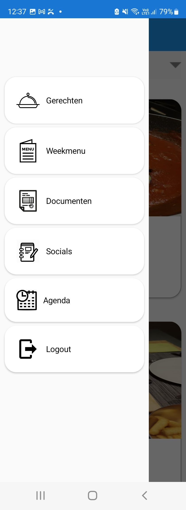
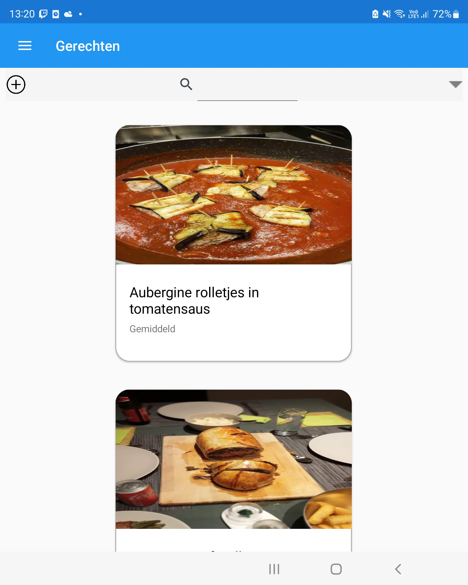

School projecten
Website maken
DetailsOp het school zijn we momenteel bezig met een portfolio website te maken.
bij elke les leren we iets nieuw bij en kan ik deze website aanpassen naar mijn voorkeur.
Hieronder vind je 3 versies die ik al heb gemaakt.
Versie1
Versie2
Versie3

Thuis projecten
Gerechten app voor android
DetailsMet deze applicatie houd ik de gerechten bij dat ik met mijn vriendin thuis maak.
Er staat ook een tab waar we onze weekmenu in bijhouden en een boodschappenlijst.
Menu scherm
Gerechten scherm
Documenten app voor android
DetailsDeze app was niet zo gemakkelijk te maken.
Hierin kan ik documenten, foto's, bestanden in opslagen.
File manager
File manager 2

Kalender app voor android
DetailsHier heb ik een kalender app gemaakt waar ik mijn afspraken kan bijhouden.
kalender

Kalender dag